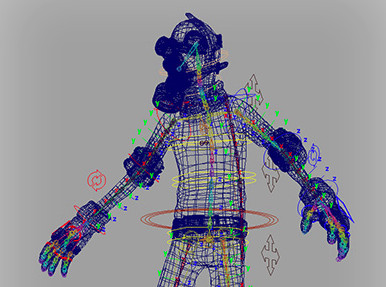
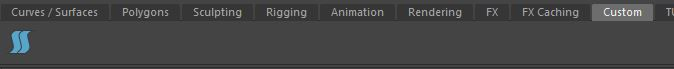
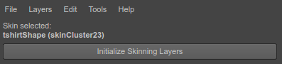
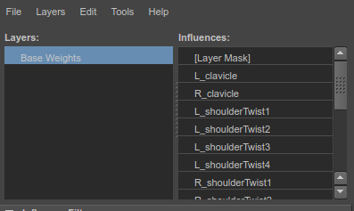
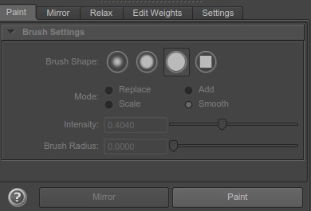
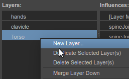
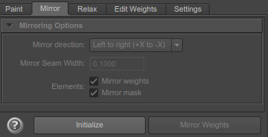

Quick Start¶
This guide, aimed for new ngSkinTools users, explains how you could start taking first steps when using the plugin. This is not an in-depth guide nor a highlight of best features of plugin - instead, just some ngSkinTools workflow basics to get started with.
If you prefer video tutorial instead, there's one available as well, covering pretty much the same thing.
It is assumed that the reader is already somewhat familiar with rigging and skinning essentials using standard Maya tools.
Get your rig ready¶

To begin using ngSkinTools, you should already have a smooth-skin-bound mesh. Either open one of your existing rigs, or load up a new mesh and bind it to joints using smooth bind (Skin > Bind Skin > Smooth Bind).
Warning
You might have other deformers in deformation chain after skin cluster - for example, poly smooth node; if any of them change vertex order in the mesh, turn those off.
Initialize skinning layers¶
Select your mesh and open ngSkinTools ("ngSkinTools" button in "Custom" shelf) 
Most of the UI will be disabled as plugin needs some more additional setup to be done before you can use all the features of ngSkinTools on your mesh. Select the mesh you want to skin, an you should see something similar to this:

This shows the discovered mesh shape from your selection, and skin cluster that is attached to it. Click "Initialize Skinning Layers" button.
Note
For the curious, this attaches a temporary node in the scene that will store skinning layers information for the selected skin cluster.
The UI changes to this:

The list on the left is layers. This is where you select active layer, and can also add/remove/arrange them. After initializing ngSkinTools layers for the first time, a single layer will be created, which has all the original weights on the skin cluster.
On the right influences (joints) are being listed. This list is used to select influence to paint weights for, or a group of influences for some other operation.
Start painting weights¶
Painting is similar to how it is done with Paint Skin Weights Tool in Maya. Click Paint button at the bottom of Paint tab to start the paint tool.

Now, select a layer in layer list, an influence in influences list, and, using one of the paint tools (Replace, Add, Scale or Smooth) start editing weights. Paint settings are somewhat identical to what they are in standard Paint Skin Weights Tool, but you'll notice a few differences:
- Brush intensity is saved and restored separately for each paint mode. It makes more sense that for
Scaleyou would usually use a large value, something like.9, whileAddbetter works with small increments, like.1. - Smoothing brush operates operates on all influences in a vertex. You should notice a very intuitive response from the brush.
See Paint Tab if you need more assistance in understanding this UI.
Add more layers¶
Skinning layers is a very powerful tool. Just like in your favorite image editing application, layers will allow you to paint in multiple "planes". Paint spine weights in one layer, arms on the other, and ngSkinTools will combine this real-time into single weights "image" for skinCluster to use.
As we're just getting the first feel here, just create a few of them (right-click layers list and choose New Layer), without worrying if you need them or not.

Now, try experimenting. What happens if you flood all weights to joint1 on the lower layer, and paint on some vertices to the joint2 in the upper layer? Not really impressive yet, joint2 simply overrides joint1.
The real magic happens when you go back to lower layer, and add some weights for joint3. Weights will be shared between joint1 and joint3, but then previously painted joint2 will override areas where it's painted.
Now try doing something more practical. In lowest layer, flood everything to just spine joints. In higher layer, paint just shoulders. Add few more layers for arms, hips, legs, props.. Before you do though, have a quick look at controlling layer transparency.
Mirror weights¶
Mirroring is a bit different in ngSkinTools. The process is divided into two parts:
- Initializing mirror info: this is where plugin memorizes how vertices and influences on one side map to the other side. You only have to do this once, unless you add more influences later;
- Mirroring weights: because plugin already knows how to find left and right side, you can repeat this as many times as you want in any pose.
To initialize mirror info, put your rig into neutral position, go to Mirror tab and click Initialize. In the dialog that opens, click Initialize to accept default options.
To begin using mirror function (via Mirror button in Paint tab, or from the Mirror tab), you have to initialize mirror information first.

Put your rig into neutral position, go to Mirror tab and click Initialize. In the dialog that opens, click Initialize to accept default options.
Note
Even though default options might work for basic rigs, there are quite a few features for controlling mirror behavior in Initialize Mirror window. See Mirror Tab for details.
Mirror is now enabled for the mesh. Choose which direction to mirror (from left to right side or vice versa), select layers to mirror (you can select multiple layers holding Shift or Ctrl buttons), and click Mirror.
See Mirror Tab section for more detailed explanations of mirroring options.